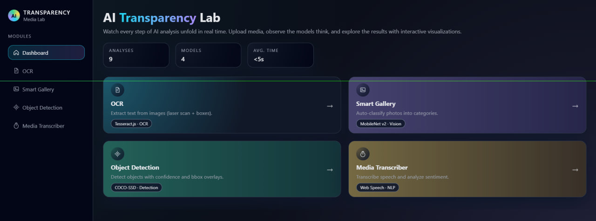
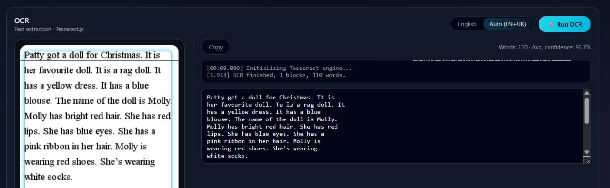
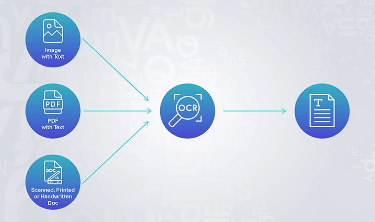

OCR Lab
Вилучення друкованого тексту з графічних файлів. Підтримка української та англійської мов. Анімація лазерного сканування та виділення розпізнаних блоків Bounding Boxes.
Information System for Intelligent Media Content Analysis
with Animated Visualization of Object and Text Recognition Results
Веб-застосунок для автоматизованої обробки неструктурованих медіаданих з використанням технологій машинного зору та обробки природної мови. Всі AI-моделі працюють безпосередньо у браузері.
Кожен модуль реалізує окремий вид аналізу медіаконтенту з прозорою візуалізацією роботи алгоритму.
Вилучення друкованого тексту з графічних файлів. Підтримка української та англійської мов. Анімація лазерного сканування та виділення розпізнаних блоків Bounding Boxes.
Автоматична класифікація пачки фотографій. Визначення категорій: люди, тварини, техніка, документи. Анімоване переміщення карток у відповідні категорії.
Пошук та ідентифікація об'єктів у статичному зображенні або відеопотоці веб-камери в режимі реального часу. Confidence score для кожного об'єкта.
Перетворення голосової доріжки в текст та аналіз емоційного фону. Визначення тональності: позитивна, негативна, нейтральна. Колірна індикація результатів.
Реальний інтерфейс застосунку під час роботи AI-модулів.



Всі нейромережеві моделі завантажуються та виконуються безпосередньо у браузері. Дані не передаються на зовнішні сервери, що забезпечує конфіденційність.
Концепція прозорості алгоритмів — користувач бачить кожен крок аналізу в режимі реального часу через анімовані оверлеї, bounding boxes та лог операцій.
Кожен AI-модуль є незалежним React-компонентом з власним хуком, сервісним шаром та CSS-стилями. Це забезпечує масштабованість та легкість підтримки.
Ярмола Альона
Студентка групи ІН-21 · Сумський державний університет · 2026